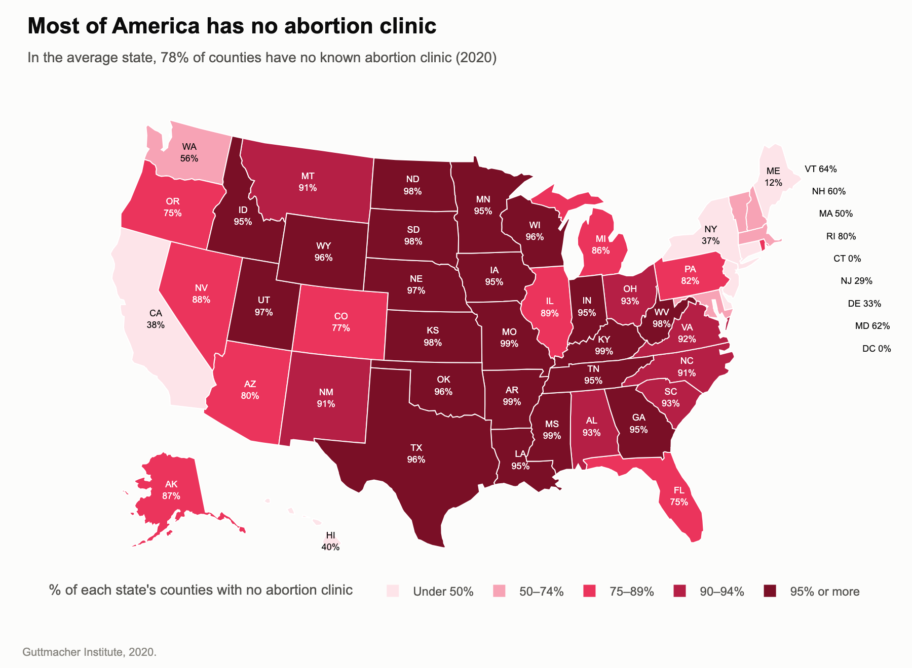
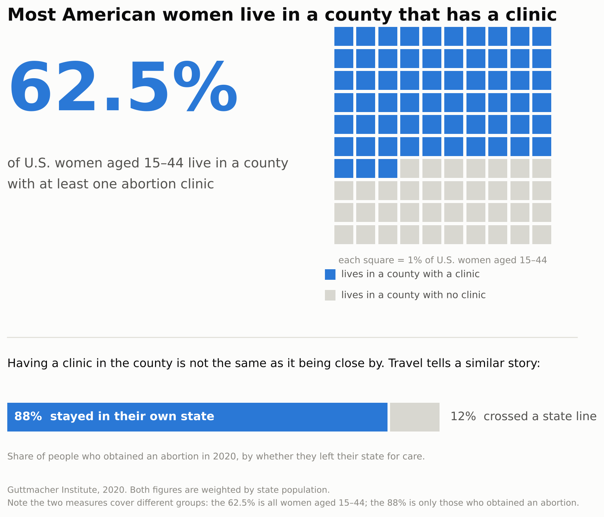

Proposition: Access to abortion care in the United States is severely restricted
Both figures below are built from the same cleaned file
(abortion_clean.csv, Guttmacher Institute data for
the 50 states and DC), so the two sides disagree about framing,
not about the numbers. Each design decision is scored from
−2 (fully deceptive) to +2
(fully earnest).
FOR the Proposition

Design Decisions and Rationale:
-
Counting counties rather than women
−1.5
The map shows the share of each state's counties with no clinic. Most counties are rural and thinly populated while clinics sit in cities, so the two measures in the dataset tell very different stories: averaged across the 51 states, 78% of counties have no clinic, but only 46% of women aged 15–44 live in such a county (37.5% when weighted by population). We chose counties because it gave the larger number. Mapping the women-based column instead would have turned much of the map pale, which is exactly why we did not. The against side made the opposite choice from the same two columns. -
A map rather than a bar chart
−1.5
A choropleth gives every state the visual weight of its land area. Montana, Wyoming and the Dakotas dominate the image despite holding very few people, while small, populous states with good access (Connecticut, New Jersey, Rhode Island) are too small to read and had to be labelled off the coast. We also considered a sorted bar chart of all 51 states, which gives every state the same width, and chose the map because land area makes the problem look national. A cartogram scaled by population would have given the opposite impression. -
Binning into five red bands
−1
We grouped states into five bands (under 50%, 50–74%, 75–89%, 90–94%, 95% or more) and coloured them from pale pink to dark red. Red reads as danger rather than as a neutral magnitude, so the map feels like an alarm before any number is read. The cut points are a choice too: they put 21 of 51 states in the darkest band, while merging everything above 75% into one band would have made the map look calmer. The bands are also a data transformation: each state's percentage is binned withpd.cut, using edges chosen so that every legend label is exact (95% sits in "95% or more", not "90–94%"). -
Headline wording
−1
"In most states, nearly every county has no abortion clinic" is literally true: 28 of 51 states are at 90% or higher. But it points the reader at counties, which are mostly empty land, and "nearly every" suggests people have nowhere to go. Our checkpoint headline, "Most of America has no abortion clinic," went further than the data (the 78% is an unweighted mean of 51 state percentages, not a share of the country or of people) and a reader could call it out at a glance. We replaced it with a claim that survives a fact-check but frames the data the same way, which makes it more persuasive and harder to spot. -
Per-state value labels and a titled legend
+2
Every state carries its own percentage, and the legend is titled "% of each state's counties with no abortion clinic," so a careful reader can check any state and see that the map counts counties, not people. States too small to label are listed beside the map so none are silently dropped. We added these after feedback that our original continuous colour scale made most states look identical (nearly all were between 75% and 99%).
AGAINST the Proposition

Design Decisions and Rationale:
-
Counting women rather than counties
−1.5
The same dataset gives two very different answers: 77.9% of counties have no clinic, but only 37.5% of women live in such a county. Counties are a unit of land and most are rural and nearly empty, so the women-based measure is arguably the more relevant one when the proposition is about people. We chose it because it produced the number we wanted, not because we settled the measurement question first. We considered showing both measures side by side — we built a connected dot plot that did exactly that — and rejected it because disclosing the gap undercut our own argument. -
Stating the share who have access rather than who
do not
−1
The figure leads with "62.5% live in a county with a clinic" instead of "37.5% do not." The arithmetic is identical and nothing is hidden, but readers anchor on the headline number and a figure above half reads as reassuring. We tried the inverse headline and the same chart felt like an argument for the other side, which is how we knew the framing rather than the data was doing the work. -
Leaving the absolute number out
−1.5
37.5% of 64.5 million women is roughly 24 million people without a clinic in their county. The figure never says so. A percentage below half feels tolerable; "24 million women" does not, and we expect this omission persuades more than any visual choice on the page. We discussed adding it as a footnote and decided against it, which is the least honest decision in this figure. -
Weighting by population instead of averaging the
states
+2
A plain mean of the 51 state values treats Wyoming and California as equal and returns 45.7%. We recovered each state's number of women aged 15–44 from two columns (abortions ÷ abortion rate × 1,000; the national total comes to 64.5 million against roughly 65 million actual) and weighted by it, giving 37.5% — the population-weighted national figure. This is the more defensible method and it also happens to favour our side, which is worth saying out loud rather than quietly banking. -
Dropping "within reach" and adding a travel
measure
+2
The first version was headlined "Most American women live within reach of a clinic" and the legend read "no clinic nearby." Feedback pointed out that both words imply travel distance, which this dataset does not measure at all — a county can be larger than a small state, so "a clinic somewhere in my county" is not the same as "a clinic close to me." We rewrote the headline to say literally what the data says, and rather than drop the question we answered it with the one behavioural column available: 88% of people who obtained an abortion in 2020 did so without crossing a state line. We also flag in the figure that the two measures cover different groups — all women aged 15–44 for the 62.5%, only those who obtained an abortion for the 88% — because sliding between two populations inside one figure would otherwise be a fourth deceptive move.
Final Reflection
We split the project by side. Fei took the argument for the proposition, Alina took the argument against it, and Abby pulled our techniques together into the write-up. One thing we agreed on early was to clean the Guttmacher spreadsheet into a single shared file first, so that whatever we argued about later, it wouldn't be the numbers. Honestly, finding a misleading angle was the easy part. Keeping it subtle was much harder. Some of our early attempts were too obvious (a headline claiming "most of America" had no clinic), and others were just hard to read (a red color scale where 75% and 99% looked like the same shade). Once we fixed the readability by grouping the map into bands and labelling every state, the charts got clearer, and the persuasion ended up living in the framing instead.
What surprised us most was how little we had to touch the data to tell completely different stories. The same spreadsheet told us that 78% of counties have no clinic and that only 37.5% of women live in one of those counties. The national number of clinics barely changed between 2017 and 2020, going from 812 to 807, but when one of our checkpoint charts showed only the 17 states that lost clinics, it suddenly looked like an 11% drop. Even our most careful calculation, weighting by population, happened to help one side. The moment that stuck with us most was the "within reach" wording on the against chart. None of us noticed it was misleading until it came up in our checkpoint feedback, and it was a little humbling to realize how easy it is to mislead someone without meaning to.
By the end, our idea of an ethical visualization was pretty simple: someone who reads the labels, legend and source carefully should come away believing the same thing as someone who only glances at it. We think it's fair to pick a measure, a chart type or a headline that leans toward your side, as long as you say plainly what you're measuring and everything you claim is true. Where we'd draw the line is at choices that only work if the reader doesn't look too closely, like a cut-off axis, a handful of states presented as if they were typical, or leaving out a number like "24 million women" because it might change someone's mind. Abortion access is a topic that affects real people and real decisions, which made us want to hold ourselves to that line even more carefully.